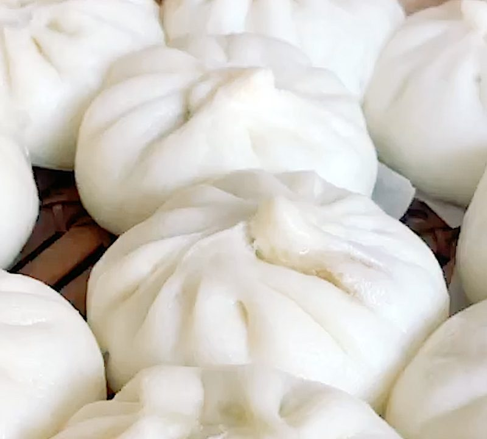

Home
Charsiu Bao Recipe

Description
Pork bao made with sweet and salty and umami filling with a tender and sweet dough
Ingredients
- Low gluten flour
- Wheat starch
- Water
- Pork
- Char siu sauce
- Sauted onions
- Smelly powder
- Kan Sui
- seasonings
Steps
- Combine flour, wheat starch,smelly powder and kansui together with water mix until dough forms
- mix the rest of the ingredients into a sticky mixture
- pleat the fucking dumpling like a boss